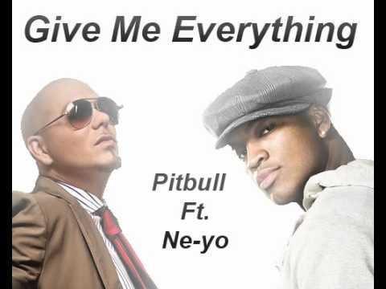

Welcome, Legend Rapper
Stage Name: Pitbull
Real Name: Armando Christian Perez
Born: 15 January 1981
Occupation: American Rapper
International music sensation Pitbull has sold millions of digital singles (including his current hit “Hey Baby” featuring T-Pain, the double-platinum smash “I Know You Want Me [Calle Ocho],” “Hotel Room Service,” “Krazy,” and “Culo”); scored two No. 1’s on Billboard’s Rap Albums charts (his gold 2004 debut M.I.A.M.I. and 2009’s Rebelution, which also debuted at No. 8 on Billboard’s Top 200 chart); and has been featured on tracks by such pop-chart mainstays as Usher, Enrique Iglesias, Jennifer Lopez, Shakira, and Janet Jackson. On the business side, Pitbull (whose given name is Armando Christian Pérez) launched his own Polo Grounds Music/J Records imprint (Mr. 305 Records), introduced his specialty vodka Voli, partnered with Sheets, the dissolvable energy strip, inked major sponsorship deals with blue-chip brands Kodak, Dr. Pepper, Bud Light and capitalized on his enormous popularity in the community by releasing his first Spanish-language album, Armando, which features the Top 5 Latin Billboard pop single “Bon Bon.” To top it all off, the Miami native was awarded his hometown’s Key to the City as a thank-you for the positive PR he has brought Florida’s nightlife capitol.
So when Pitbull explains that he’s titled his new album Planet Pit because he feels as if the world is his right now, he’s not just blowing smoke. “I’m not suggesting I run the world, I just feel like I've built my own planet,” he says. “I’m catching a lot of people’s ears, whether it’s with my music or appearing on someone else’s track. When ‘I Know You Want Me [Calle Ocho]’ took off, I started traveling the world, and I saw the impact that a global hit can have — the way it brings people together. So now I’ve set my goals even higher. Going in to make Planet Pit, I said, ‘Okay, Pitbull was cool, Mr. 305 was great — now it’s time for Mr. Worldwide.’”
You need to generate a lot of heat if you want to be Mr. Worldwide, but if there’s one thing Pitbull has — besides a way with rapid-fire rhymes, billion-dollar beats, and globally infectious hooks — it’s charm by the boatload. Always impeccably dressed in a sharp suit and shades, Pit enters a room trailed by his pals happily bantering away in Spanish, a gorgeous girl, and members of his management team. Even while juggling a constant stream of incoming texts and emails on his two smartphones, Pit has the ability to make everyone he meets feel at home, addressing them as “Mama” or “Papo,” and asking if they need anything. He’s the consummate professional: confident and charismatic — a true star.
Pit’s magnetic personality electrifies Planet Pit — a spicy, stylish stew of raps, beats, and hooks influenced by the music Pit has absorbed growing up and living in Miami, which claims a wide range of dance-driven sounds thanks to the Cuban, Dominican, Colombian, and Caribbean people who make it their home. “I grew up with salsa, merengue, bachata, booty-shaking music, freestyle music, then came hip hop for me. So you throw all that in a pot, which we call a paella in Spanish — that's what I'm trying to do with this album,” says Pit, who performed in such far-flung locales as France, Indonesia, South Africa, Brazil, and Singapore, among others, while promoting Rebelution. “It embodies a bit of everywhere I’ve been. For example, ‘Shake Señora’ has got T-Pain, who’s from Tallahassee and Sean Paul who brings the Jamaican feel. I’m trying to be the ambassador; the bridge builder who brings elements from all over the world and puts it all together so it sounds like nothing you’ve ever heard before.”
List of Awards and Nominations
| Award | Wins | Nominations |
|---|---|---|
| American Music Awards | 0 | 4 |
| ASCAP Awards | 1 | 1 |
| Billboard Music Awards | 1 | 8 |
| BMI Awards | 2 | 2 |
| International Dance Music Awards | 1 | 1 |
| Latin Grammy Awards | 1 | 3 |
| MP3 Music Awards | 1 | 0 |
| MTV Video Music Awards | 0 | 6 |
| MTV Europe Music Awards | 0 | 4 |
| MuchMusic Video Awards | 0 | 3 |
| NRJ Music Awards | 0 | 3 |
| PopCrush Music Awards | 0 | 1 |
| Premios Juventud | 7 | 13 |
| Premios 40 Principales | 2 | 7 |
| Premios 40 Principales America | 1 | 1 |
| Premios Tu Mundo | 0 | 5 |
| Teen Choice Awards | 0 | 16 |
Photo Collection
 |
|
|  |